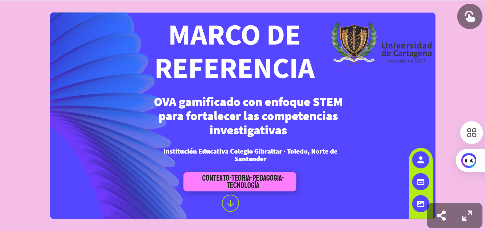

PORTAFOLIO · ACTIVIDAD
E-book
Explora el e-book digital del proyecto de investigación, donde se presenta de manera interactiva el Marco de Referencia.

E-book interactivo
En este e-book se presenta el Marco de Referencia del proyecto de investigación, integrando el contexto rural, las competencias investigativas, la gamificación, el enfoque STEM, el OVA y la tecnología educativa.
✨ EXPLORAR E-BOOK EN GENIALLY →ℹ️ Al hacer clic se abrirá el e-book en una nueva pestaña.
← VOLVER AL MENÚ